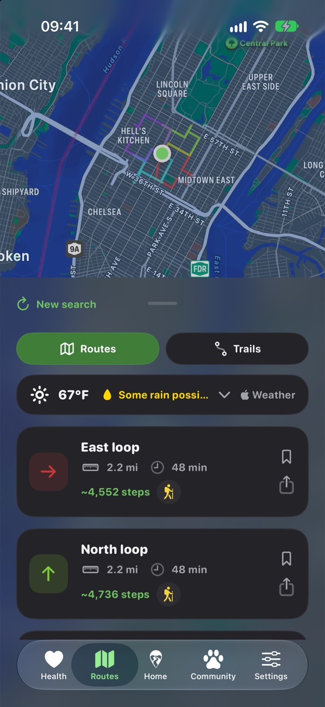
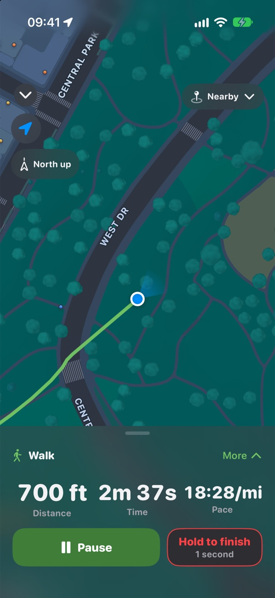
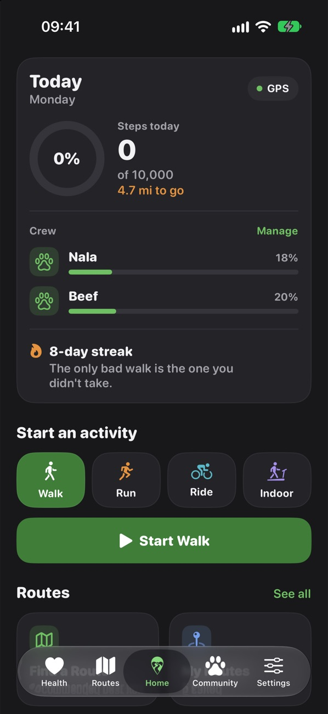

Find your loop
Choose 20, 30 or 45 minutes, or a loop that finishes your step goal. Compare distance, estimated steps and elevation before you head out.
See how routes workFind a loop from your front door that fits the time you have. Bring your dog, track your steps, and see how far you went together.
Free to download for iPhone and iPad.


Take a quick loop, find a new trail, or give your dog time to sniff.

Track walks, runs, rides and indoor sessions. See your steps, streaks and personal records, use Apple Health for workouts, or join a challenge with other walkers.
Wockett has no account to set up. Your walks and pet profiles stay on your device and sync through your private iCloud. You choose what to share with the community.